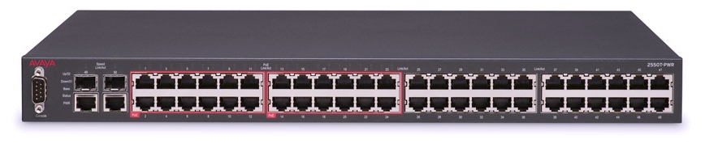

The fact that we manage the switches in our data centres differently than any other server is patently absurd, but we do so because we want to harness the power of a tiny bit of silicon which happens to be able to dramatically speed up the switching bandwidth.
| beware of proprietary silicon, it's absurd! |
That tiny bit of silicon is known as an ASIC, or an application specific integrated circuit, and one particularly well performing ASIC (which is present in many commercially available switches) is called the Trident.
None of this should impact the end-user management experience, however, because the big switch companies and chip makers believe that there is some special differentiation in their IP, they’ve ensured that the stacks and software surrounding the hardware is highly proprietary and difficult to replace. This also lets them create and sell bundled products and features that you don’t want, but which you can’t get elsewhere.
This is still true today! System and network engineers know too well the hassles of dealing with the different proprietary switch operating systems and interfaces. Why not standardize on the well-known interface that every GNU/Linux server uses.
We’re talking about iptables of course! (Although nftables would be an acceptable standard too!) This way we could have a common interface for all the networked devices in our server room.
I’ve been able to work around this limitation in the past, by using Linux to do my routing in software, and by building the routers out of COTS 2U GNU/Linux boxes. The trouble with this approach, is that they’re bigger, louder, more expensive, consume more power, and don’t have the port density that a 48 port 1U switch does.
 |
| a 48 port, 1U switch |
It turns out that there is a company which is actually trying to build this mythical box. It is not perfect, but I think they are on the right track. What follows are my opinions of what they’ve done right, what’s wrong, and what I’d like to see in the future.
Who are they?
They are Cumulus Networks, and I recently got to meet, demo and discuss with one of their very talented engineers, Leslie Carr. I recently attended a talk that she gave on this very same subject. She gave me a rocket turtle. (Yes, this now makes me biased!)
| my rocket turtle, the cumulus networks mascot |
What are they doing?
You buy an existing switch from your favourite vendor. You then throw out (flash over) the included software, and instead, pay them a yearly licensing fee to use the “Cumulus” GNU/Linux. It comes as an OS image, based off of Debian.
How does it talk to the ASIC?
The OS image comes with a daemon called switchd that transfers the kernel iptables rules down into the ASIC. I don’t know the specifics on how this works exactly because:
The OS is only distributed as a single image. This is an unfortunate mistake! It should be available from the upstream project with switchd (and any other add-ons) as individual .deb packages. That way, I know I’m getting a stock OS which is preferably even built and signed by the Debian team! That way I could use the same infrastructure for my servers to keep all my servers up to date.
Problems with OS security:
Unfortunately the OS doesn’t benefit from any of the standard OS security enhancements like SELinux. I’d prefer running a more advanced distro like RHEL or CentOS that have these things out of the box, but if Cumulus will continue using Debian, then they must include some more advanced security measures. I didn’t find AppArmor or grsecurity in use either. It did seem to have all the important bash security updates:
cumulus@switch1$ bash --version
GNU bash, version 4.2.37(1)-release (powerpc-unknown-linux-gnu)
Copyright (C) 2011 Free Software Foundation, Inc.
License GPLv3+: GNU GPL version 3 or later
This is free software; you are free to change and redistribute it.
There is NO WARRANTY, to the extent permitted by law.
Use of udev:
This switch does seem to support and use udev, although not being a udev expert I can’t comment on if it’s done properly or not. I’d be interested to hear from the pros. Here’s what I found:
cumulus@switch1$ cd /etc/udev/
cumulus@switch1$ tree
.
`-- rules.d
|-- 10-cumulus.rules
|-- 60-bridge-network-interface.rules -> /dev/null
|-- 75-persistent-net-generator.rules -> /dev/null
`-- 80-networking.rules -> /dev/null
1 directory, 4 files
cumulus@switch1$ cat rules.d/10-cumulus.rules | tail -n 7
# udev rules specific to Cumulus Linux
# Rule called when the linux-user-bde driver is loaded
ACTION=="add" SUBSYSTEM=="module" DEVPATH=="/module/linux_user_bde" ENV{DEVICE_NAME}="linux-user-bde" ENV{DEVICE_TYPE}="c" ENV{DEVICE_MINOR}="0" RUN="/usr/lib/cumulus/udev-module"
# Quanta LY8 uses RTC1
KERNEL=="rtc1", PROGRAM="/usr/bin/platform-detect", RESULT=="quanta,ly8_rangeley", SYMLINK+="rtc"
Other things:
There seems to be a number of extra things running on the switch. Here’s what I mean:
cumulus@switch1$ ps auxwww
USER PID %CPU %MEM VSZ RSS TTY STAT START TIME COMMAND
root 1 0.0 0.0 2516 860 ? Ss Nov05 0:02 init [3]
root 2 0.0 0.0 0 0 ? S Nov05 0:00 [kthreadd]
root 3 0.0 0.0 0 0 ? S Nov05 0:05 [ksoftirqd/0]
root 5 0.0 0.0 0 0 ? S Nov05 0:00 [kworker/u:0]
root 6 0.0 0.0 0 0 ? S Nov05 0:00 [migration/0]
root 7 0.0 0.0 0 0 ? S< Nov05 0:00 [cpuset]
root 8 0.0 0.0 0 0 ? S< Nov05 0:00 [khelper]
root 9 0.0 0.0 0 0 ? S< Nov05 0:00 [netns]
root 10 0.0 0.0 0 0 ? S Nov05 0:02 [sync_supers]
root 11 0.0 0.0 0 0 ? S Nov05 0:00 [bdi-default]
root 12 0.0 0.0 0 0 ? S< Nov05 0:00 [kblockd]
root 13 0.0 0.0 0 0 ? S< Nov05 0:00 [ata_sff]
root 14 0.0 0.0 0 0 ? S Nov05 0:00 [khubd]
root 15 0.0 0.0 0 0 ? S< Nov05 0:00 [rpciod]
root 17 0.0 0.0 0 0 ? S Nov05 0:00 [khungtaskd]
root 18 0.0 0.0 0 0 ? S Nov05 0:00 [kswapd0]
root 19 0.0 0.0 0 0 ? S Nov05 0:00 [fsnotify_mark]
root 20 0.0 0.0 0 0 ? S< Nov05 0:00 [nfsiod]
root 21 0.0 0.0 0 0 ? S< Nov05 0:00 [crypto]
root 34 0.0 0.0 0 0 ? S Nov05 0:00 [scsi_eh_0]
root 36 0.0 0.0 0 0 ? S Nov05 0:00 [kworker/u:2]
root 41 0.0 0.0 0 0 ? S Nov05 0:00 [mtdblock0]
root 42 0.0 0.0 0 0 ? S Nov05 0:00 [mtdblock1]
root 43 0.0 0.0 0 0 ? S Nov05 0:00 [mtdblock2]
root 44 0.0 0.0 0 0 ? S Nov05 0:00 [mtdblock3]
root 49 0.0 0.0 0 0 ? S Nov05 0:00 [mtdblock4]
root 362 0.0 0.0 0 0 ? S Nov05 0:54 [hwmon0]
root 363 0.0 0.0 0 0 ? S Nov05 1:01 [hwmon1]
root 398 0.0 0.0 0 0 ? S Nov05 0:04 [flush-8:0]
root 862 0.0 0.1 28680 1768 ? Sl Nov05 0:03 /usr/sbin/rsyslogd -c4
root 1041 0.0 0.2 5108 2420 ? Ss Nov05 0:00 /sbin/dhclient -pf /run/dhclient.eth0.pid -lf /var/lib/dhcp/dhclient.eth0.leases eth0
root 1096 0.0 0.1 3344 1552 ? S Nov05 0:16 /bin/bash /usr/bin/arp_refresh
root 1188 0.0 1.1 15456 10676 ? S Nov05 1:36 /usr/bin/python /usr/sbin/ledmgrd
root 1218 0.2 1.1 15468 10708 ? S Nov05 5:41 /usr/bin/python /usr/sbin/pwmd
root 1248 1.4 1.1 15480 10728 ? S Nov05 39:45 /usr/bin/python /usr/sbin/smond
root 1289 0.0 0.0 13832 964 ? SNov05 0:00 /sbin/auditd
root 1291 0.0 0.0 10456 852 ? S
root 12776 0.0 0.0 0 0 ? S 04:31 0:01 [kworker/0:0]
root 13606 0.0 0.0 0 0 ? S 05:05 0:00 [kworker/0:2]
root 13892 0.0 0.0 0 0 ? S 05:13 0:00 [kworker/0:1]
root 13999 0.0 0.0 2028 512 ? S 05:16 0:00 sleep 30
cumulus 14016 0.0 0.1 3324 1128 pts/0 R+ 05:17 0:00 ps auxwww
root 30713 15.6 2.4 69324 24176 ? Ssl Nov05 304:16 /usr/sbin/switchd -d
root 30952 0.0 0.3 11196 3500 ? Ss Nov05 0:00 sshd: cumulus [priv]
cumulus 30954 0.0 0.1 11196 1684 ? S Nov05 0:00 sshd: cumulus@pts/0
cumulus 30955 0.0 0.2 4548 2888 pts/0 Ss Nov05 0:01 -bash
In particular, I’m referring to ledmgrd, pwmd, smond and others. I don’t doubt these things are necessary and useful, in fact, they’re written in python and should be easy to reverse if anyone is interested, but if they’re a useful part of a switch capable operating system, I hope that they grow proper upstream projects and get appropriate documentation, licensing, and packaging too!
Switch ports are network devices:
Hacking on the device couldn’t feel more native. Anyone remember how to enumerate the switch ports on IOS? … Who cares! Try the standard iproute2 tools on a Cumulus box:
cumulus@switch1$ ip a s swp42
44: swp42: <broadcast,multicast> mtu 1500 qdisc noop state DOWN qlen 500
link/ether 08:9e:01:f8:96:74 brd ff:ff:ff:ff:ff:ff
cumulus@switch1$ ip a | grep swp | wc -l
52
What about ifup/ifdown?
This one is a bit different:
cumulus@switch1$ file /sbin/ifup
/sbin/ifup: symbolic link to `/sbin/ifupdown'
cumulus@switch1$ file /sbin/ifupdown
/sbin/ifupdown: Python script, ASCII text executable
The Cumulus team encountered issues with the traditional ifup/ifdown tools found in a stock distro. So they replaced them, with shiny python versions:
<a href="https://github.com/CumulusNetworks/ifupdown2">https://github.com/CumulusNetworks/ifupdown2</a>
I hope that this project either gets into the upstream distro, or that some upstream writes tools that address the limitations in the various messes of shell scripts. I’m optimistic about networkd being the solution here, but until that’s fully baked, the Cumulus team has built a nice workaround. Additionally, until the Debian team finalizes on the proper technical decision to use SystemD, it has a bleak future.
Kernel:
All the kernel hackers out there will want to know what’s under the hood:
cumulus@switch1$ uname -a
Linux leaf1 3.2.46-1+deb7u1+cl2.2+1 #3.2.46-1+deb7u1+cl2.2+1 SMP Thu Oct 16 14:28:31 PDT 2014 ppc powerpc GNU/Linux
Because this is an embedded chip found in a 1U box, and not an Xeon processor, it’s noticeably slower than a traditional server. This is of course (non-sarcastically) exactly what I want. For admin tasks, it has plenty of power, and this trade-off means it has lower power consumption and heat production than a stock server. While debugging some puppet code that I was running takes longer than normal on this box, I was eventually able to get the job done. This is another reason why this box needs to act like more of an upstream distro – if it did, I’d be able to have a faster machine as my dev box!
Other tools:
Other stock tools like ethtool, and brctl, work out of the box. Bonding, vlan’s and every other feature I tested seems to work the same way you expect from a GNU/Linux system.
Puppet and automation:
Readers of my blog will know that I manage my servers with Puppet. Instead of having the puppet agent connect over an API to the switch, you can directly install and run puppet on this Cumulus Linux machine! Some users might quickly jump to using the firewall module as the solution for consistent management, but a level two user will know that a higher level wrapper around shorewall is the better approach. This is all possible with this switch and seems to work great! The downside was that I had to manually add repositories to get the shorewall packages because it is not a stock distro :(
Why not SDN?
SDN or software-defined networking, is a fantastic and interesting technology. Unfortunately, it’s a parallel problem to what I’m describing in this article, and not a solution to help you work around the lack of a good GNU+Linux switch. If programming the ASIC’s wasn’t an NDA requiring activity, I bet we’d see a lot more innovative networking companies and technologies pop up.
Future?
This product isn’t quite baked yet for me to want to use it in production, but it’s so tantalizingly close that it’s strongly worth considering. I hope that they react positively to my suggestions and create an even more native, upstream environment. Once this is done, it will be my go to, for all my switching!
Thanks: Thanks very much to the Cumulus team for showing me their software, and giving me access to demo it on some live switches. I didn’t test performance, but I have no doubt that it competes with the market average. Prove me right by trying it out yourself!
Thanks for listening, and Happy hacking!
James
PS: Special thanks to David Caplan for the great networking discussions we had!
You can follow James on Mastodon for more frequent updates and other random thoughts.
You can follow James on Twitter for more frequent updates and other random thoughts.
You can support James on GitHub if you'd like to help sustain this kind of content.
You can support James on Patreon if you'd like to help sustain this kind of content.
Your comment has been submitted and will be published if it gets approved.
Click here to see the patch you generated.
{kind=link}
{kind=link}
{kind=link}
Comments
Nothing yet.
Post a comment